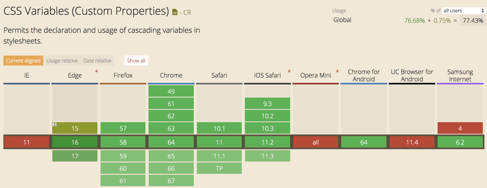

3. css变量
当微软宣布 Edge 浏览器将支持 CSS 变量。这个重要的 CSS 新功能，所有主要浏览器已经都支持了。本文全面介绍如何使用它，你会发现原生 CSS 从此变得异常强大。
一、变量的声明¶
声明变量的时候，变量名前面要加两根连词线（--）。
body {
--foo: #7F583F;
--bar: #F7EFD2;
}
上面代码中，body选择器里面声明了两个变量：--foo和--bar。
它们与color、font-size等正式属性没有什么不同，只是没有默认含义。所以 CSS 变量（CSS variable）又叫做"CSS 自定义属性"（CSS custom properties）。因为变量与自定义的 CSS 属性其实是一回事。
你可能会问，为什么选择两根连词线（--）表示变量？因为$foo被 Sass 用掉了，@foo被 Less 用掉了。为了不产生冲突，官方的 CSS 变量就改用两根连词线了。
各种值都可以放入 CSS 变量。
:root{
--main-color: #4d4e53;
--main-bg: rgb(255, 255, 255);
--logo-border-color: rebeccapurple;
--header-height: 68px;
--content-padding: 10px 20px;
--base-line-height: 1.428571429;
--transition-duration: .35s;
--external-link: "external link";
--margin-top: calc(2vh + 20px);
}
变量名大小写敏感，--header-color和--Header-Color是两个不同变量。
二、var() 函数¶
var()函数用于读取变量。
a {
color: var(--foo);
text-decoration-color: var(--bar);
}
var()函数还可以使用第二个参数，表示变量的默认值。如果该变量不存在，就会使用这个默认值。
color: var(--foo, #7F583F);
第二个参数不处理内部的逗号或空格，都视作参数的一部分。
var(--font-stack, "Roboto", "Helvetica");
var(--pad, 10px 15px 20px);
var()函数还可以用在变量的声明。
:root {
--primary-color: red;
--logo-text: var(--primary-color);
}
注意，变量值只能用作属性值，不能用作属性名。
.foo { --side: margin-top; /* 无效 */ var(--side): 20px;}
上面代码中，变量--side用作属性名，这是无效的。
三、变量值的类型¶
如果变量值是一个字符串，可以与其他字符串拼接。
--bar: 'hello';
--foo: var(--bar)' world';
利用这一点，可以 debug（例子）。
body:after {
content: '--screen-category : 'var(--screen-category);
}
如果变量值是数值，不能与数值单位直接连用。
.foo {
--gap: 20;
/* 无效 */
margin-top: var(--gap)px;
}
上面代码中，数值与单位直接写在一起，这是无效的。必须使用calc()函数，将它们连接。
.foo {
--gap: 20;
margin-top: calc(var(--gap) * 1px);
}
如果变量值带有单位，就不能写成字符串。
/* 无效 */.foo { --foo: '20px'; font-size: var(--foo);}
/* 有效 */.foo { --foo: 20px; font-size: var(--foo);}
四、作用域¶
同一个 CSS 变量，可以在多个选择器内声明。读取的时候，优先级最高的声明生效。这与 CSS 的"层叠"（cascade）规则是一致的。
下面是一个例子。
<style>
:root { --color: blue; }
div { --color: green; }
#alert { --color: red; }
* { color: var(--color); }
</style>
<p>蓝色</p>
<div>绿色</div>
<div id="alert">红色</div>
上面代码中，三个选择器都声明了--color变量。不同元素读取这个变量的时候，会采用优先级最高的规则，因此三段文字的颜色是不一样的。
这就是说，变量的作用域就是它所在的选择器的有效范围。
body {
--foo: #7F583F;
}
.content {
--bar: #F7EFD2;
}
上面代码中，变量--foo的作用域是body选择器的生效范围，--bar的作用域是.content选择器的生效范围。
由于这个原因，全局的变量通常放在根元素:root里面，确保任何选择器都可以读取它们。
:root {
--main-color: #06c;
}
五、响应式布局¶
CSS 是动态的，页面的任何变化，都会导致采用的规则变化。
利用这个特点，可以在响应式布局的media命令里面声明变量，使得不同的屏幕宽度有不同的变量值。
body {
--primary: #7F583F;
--secondary: #F7EFD2;
}
a {
color: var(--primary);
text-decoration-color: var(--secondary);
}
@media screen and (min-width: 768px) {
body {
--primary: #F7EFD2;
--secondary: #7F583F;
}
}
六、兼容性处理¶
对于不支持 CSS 变量的浏览器，可以采用下面的写法。
a {
color: #7F583F;
color: var(--primary);
}
也可以使用@support命令进行检测。
@supports ( (--a: 0)) {
/* supported */
}
@supports ( not (--a: 0)) {
/* not supported */
}
七、JavaScript 操作¶
JavaScript 也可以检测浏览器是否支持 CSS 变量。
const isSupported = window.CSS && window.CSS.supports && window.CSS.supports('--a', 0);if (isSupported) { /* supported */} else { /* not supported */}
JavaScript 操作 CSS 变量的写法如下。
// 设置变量
document.body.style.setProperty('--primary', '#7F583F');
// 读取变量
document.body.style.getPropertyValue('--primary').trim();
// '#7F583F'
// 删除变量
document.body.style.removeProperty('--primary');
这意味着，JavaScript 可以将任意值存入样式表。下面是一个监听事件的例子，事件信息被存入 CSS 变量。
const docStyle = document.documentElement.style;
document.addEventListener('mousemove', (e) => {
docStyle.setProperty('--mouse-x', e.clientX);
docStyle.setProperty('--mouse-y', e.clientY);
});
那些对 CSS 无用的信息，也可以放入 CSS 变量。
--foo: if(x > 5) this.width = 10;
上面代码中，--foo的值在 CSS 里面是无效语句，但是可以被 JavaScript 读取。这意味着，可以把样式设置写在 CSS 变量中，让 JavaScript 读取。
所以，CSS 变量提供了 JavaScript 与 CSS 通信的一种途径。
八、浏览器支持¶
目前，全球网站流量的 77％ 支持CSS变量，而美国已经接近90％。我们已经在 Scrimba.com 上使用 CSS 变量，因为我们的客户大多使用现代浏览器。
